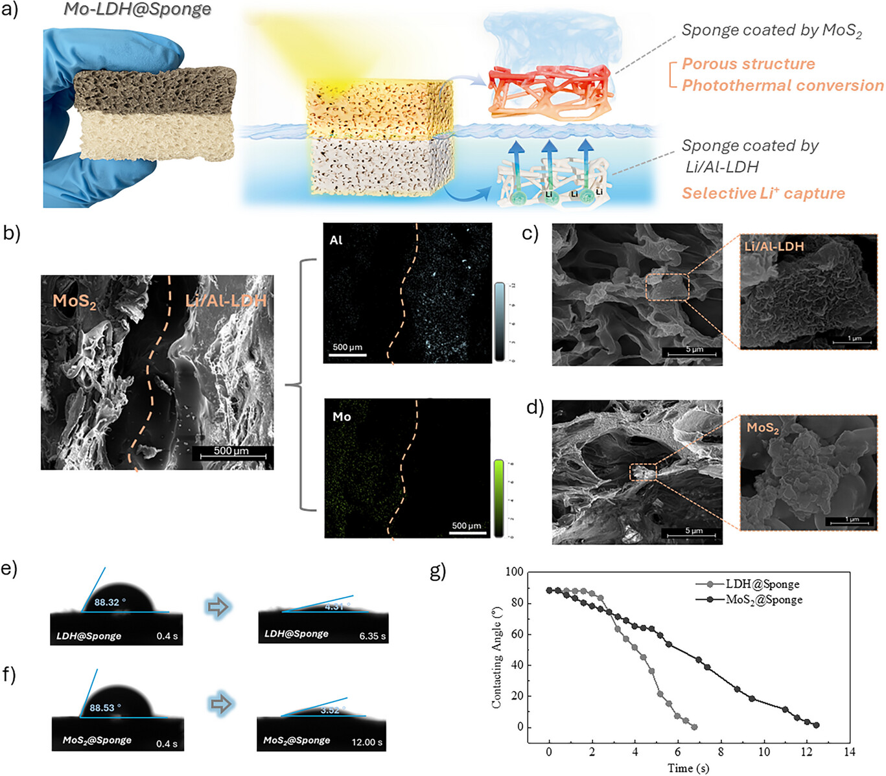

Functional Materials

We design functional materials and study their structure, surface chemistry, and interactions with complex liquid systems. Experiments and molecular simulations guide the development of selective separation materials.